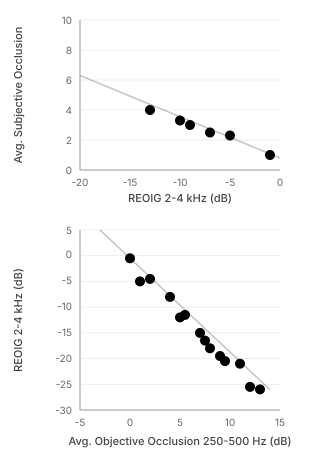

Occlusion¶
Overview¶
Own-voice quality is a common complaint of hearing aid users[16] and can be attributed to two factors:
- Occlusion -- bone-conducted sound becomes trapped in the ear canal due to the physical seal of the device
- Amplification -- the receiver-transmitted sound alters own-voice perception
For these initial metrics, we chose to focus on occlusion, which is the larger contributor to user complaints[17].
Goal¶
Our goal was to estimate subjective occlusion (a user's rating of their perceived occlusion on a 0--10 scale, as in Cubick et al. 2022[18]) via acoustic measurements.
Measurement: REOIG¶
We measure Real Ear Occluded Insertion Gain (REOIG) -- the difference in spectrum between the open ear and the aided ear with the device powered off[18]. We reasoned that acoustic coupling that generates high subjective occlusion usually also generates more negative REOIG (excluding deep-insertion devices).
Devices Without Active Occlusion Cancellation¶
Using data from Cubick et al. (2022)[18], we observed that the group average REOIG from 2--4 kHz for instant-fit tips had a strong linear correlation to the group average subjective occlusion (Figure 6A). We use this relationship to map from REOIG to estimated subjective occlusion.
Devices With Active Occlusion Cancellation (AOC)¶
For devices with AOC[19], the passive REOIG measurement does not capture the influence of cancellation on subjective occlusion. For these devices, we instead measure objective occlusion on vocalizing humans.
Objective occlusion is the difference in probe mic spectra between the open ear and the aided ear while the participant vocalizes a sustained /i/ (as in Kuk et al. 2009[20]):
We then use a two-step estimation to place AOC devices on the same subjective scale:
- Map from objective occlusion to a matched REOIG value: We replotted data from Sabin (2020)[19] (their Figs. 4 and 7) and observed a strong linear correlation between group average objective occlusion in the 250--500 Hz band and the group average REOIG from 2--4 kHz (Figure 6B).
- Map from matched REOIG to subjective occlusion: Using the same relationship as for non-AOC devices (Figure 6A).
Note
This two-step estimation introduces compounding uncertainty, as each mapping step carries its own measurement error. We consider this acceptable given the limited alternatives for estimating subjective occlusion in AOC devices.

Figure 6. (Top) Relationship between REOIG and subjective occlusion, replotted from Cubick et al. (2022)[18]. (Bottom) Relationship between REOIG and objective occlusion, replotted from Sabin (2020)[19].
Mapping to 0--5 Scale¶
The estimated subjective occlusion value is inverted and scaled to our 0--5 scale:
- 5 = minimal or no occlusion (open fit)
- 0 = severe occlusion (deeply occluding fit with no vent)
Higher scores are better -- they indicate that the device coupling allows low-frequency energy to escape the ear canal naturally.